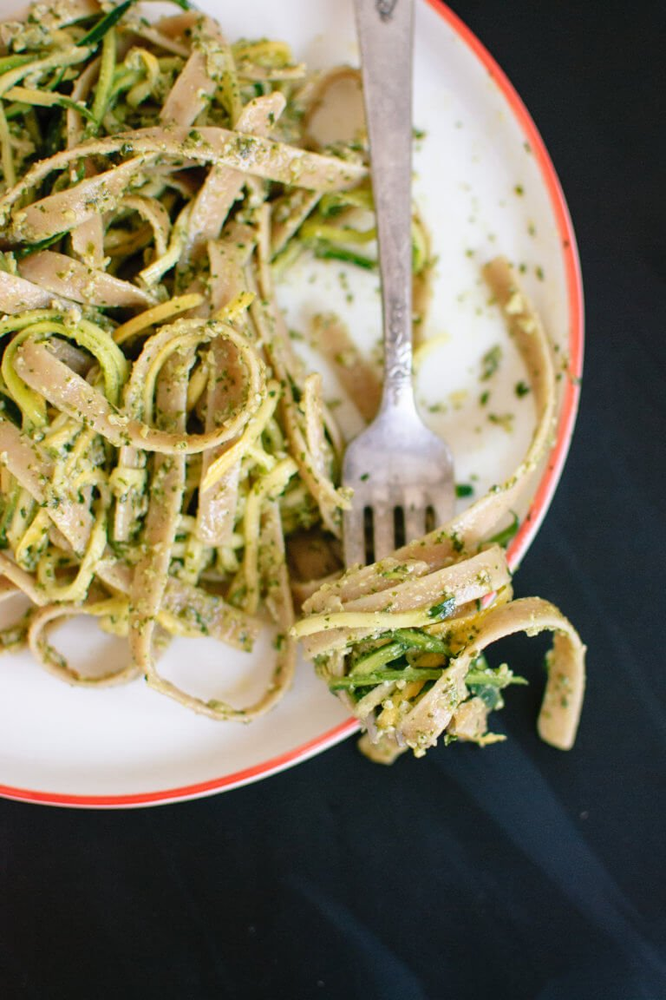

Cilantro-Pepita Pesto

Ingredients:
- ⅓ cup raw pepitas (pumpkin seeds)
- 1 cup packed cilantro (mostly leaves, about 2 bunches’ worth)
- 2 teaspoons seeded and roughly chopped jalapeño
- 2 cloves garlic, roughly chopped
- 1 lime, juiced
- ½ teaspoon fine-grain sea salt
- ⅓ cup extra virgin olive oil
- 8 ounces (½ pound) whole grain fettuccine or linguine
- 2 small zucchini
- 1 yellow squash
Instructions:
- Lightly toast the pepitas in a small pan over medium-low heat
for a few minutes, tossing frequently, until fragrant. Transfer the
pepitas to a bowl to cool a bit.
- Remove any discolored skin from the squash with a paring knife.
Use a julienne peeler (or regular peeler) to slice the squash
lengthwise, one side at a time (stop once you get to the seeded
part, then turn the squash to work on the next side).
- Bring a large pot of salted water to a boil, and cook fettuccine
until al dente, according to the package’s instructions. Drain and
set aside.
- In a food processor, combine the cilantro, jalapeño, garlic,
lime juice, salt and cooled pepitas. While running the food
processor, drizzle in the olive oil. Stop processing once the
pesto is well blended.
- Toss the cooked pasta and ribboned squash with the pesto and serve.